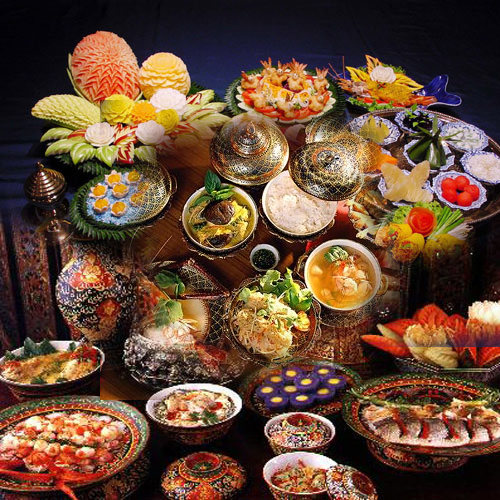

ความเป็นมาของ"ห้องเครื่องสี่ภาค"
คำว่า "ห้องเครื่องสี่ภาค" ในปัจจุบัน มักถูกนำมาใช้ในเชิงสัญลักษณ์ของ
"ศิลปะการปรุงอาหารไทยขั้นสูงที่รวบรวมความโดดเด่นของทั้ง 4 ภาคเข้าไว้ด้วยกัน"
โดยเน้นความสะอาด ความประณีต รสชาติที่กลมกล่อม และการจัดแต่งที่สวยงามระดับชาววัง
เพื่อใช้ในงานเลี้ยงต้อนรับระดับประเทศ หรือในร้านอาหารไทยโบราณที่ต้องการอนุรักษ์วัฒนธรรมการกินของไทยเอาไว้
"เสน่ห์ของรสชาติสี่ภาค"
เมื่อนำรสชาติทั้ง 4 ภาคมารวมกันในสำรับเดียว
เราจะได้พบกับ "ความสมดุลที่สมบูรณ์แบบ"
มีทั้งความมันละมุนของภาคเหนือ ความนัวแซ่บของภาคอีสาน ความกลมกล่อมหลากมิติของภาคกลาง และความร้อนแรงปลุกใจของภาคใต้
นี่คือเหตุผลว่าทำไมอาหารไทยถึงไม่เคยน่าเบื่อ
เพราะคำต่อไปที่คุณตัก... "อาจเปลี่ยนโลกของรสชาติไปอีกด้านหนึ่งเลยทีเดียว"
